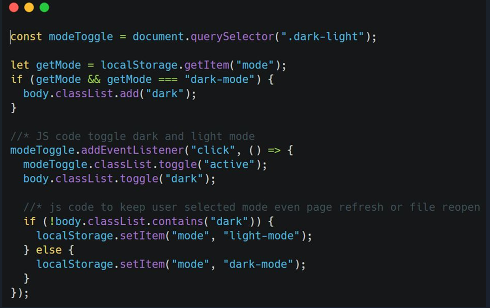

Si, au premier essai, vous manquez la réponse correcte, passez à la question suivante car seul le premier essai sera considéré à la fin du temps imparti !
Contexte professionnel : Vous devez implémenter une fonctionnalité qui permet de fermer la barre latérale en cliquant en dehors de celle-ci. Question : Que se passe-t-il si l’utilisateur clique sur un élément avec la classe menu ?
La classe active est ajoutée à l’élément nav.
La classe active est supprimée de l’élément nav.
La classe active est basculée sur l’élément nav.
Rien ne se passe car l’élément cliqué contient la classe menu.
Contexte professionnel : Vous devez implémenter une fonctionnalité qui permet de fermer la barre latérale en cliquant en dehors de celle-ci. Question : Que se passe-t-il si l’utilisateur clique sur un élément avec la classe sidebarOpen ?
La classe active est ajoutée à l’élément nav.
La classe active est supprimée de l’élément nav.
La classe active est basculée sur l’élément nav.
Rien ne se passe car l’élément cliqué contient la classe sidebarOpen.
Contexte professionnel : Vous devez implémenter une fonctionnalité qui permet de fermer la barre latérale en cliquant en dehors de celle-ci. Question : Que se passe-t-il si l’utilisateur clique sur un élément sans les classes sidebarOpen ou menu ?
La classe active est ajoutée à l’élément nav.
La classe active est supprimée de l’élément nav.
La classe active est basculée sur l’élément nav.
Rien ne se passe car l’événement click n’est pas écouté sur l’élément body.
Contexte professionnel : Vous devez implémenter une fonctionnalité qui permet de fermer la barre latérale en cliquant en dehors de celle-ci. Question : Quel est le rôle de la ligne console.log(clickedElem); dans le code suivant ?
Elle affiche un message dans la console lorsque l’utilisateur clique sur la barre latérale.
Elle affiche l’élément cliqué dans la console pour le débogage.
Elle ajoute une classe à l’élément cliqué.
Elle supprime une classe de l’élément cliqué.
Contexte professionnel : Vous devez implémenter une fonctionnalité qui permet de fermer la barre latérale en cliquant sur un bouton. Question : Que se passe-t-il lorsque l’utilisateur clique sur l’élément avec la classe .siderbarClose ?
La classe active est ajoutée à l’élément nav.
La classe active est supprimée de l’élément nav.
La classe active est basculée sur l’élément nav.
Rien ne se passe car l’événement click n’est pas écouté sur cet élément.
Contexte professionnel : Vous devez implémenter une fonctionnalité qui permet d’ouvrir et de fermer la barre latérale en cliquant sur des boutons spécifiques. Question : Que fait le code suivant lorsqu’il est exécuté ?
Il sélectionne les éléments .sidebarOpen et .siderbarClose et ajoute des écouteurs d’événements pour basculer la classe active sur l’élément nav.
Il sélectionne les éléments .sidebarOpen et .siderbarClose et ajoute des écouteurs d’événements pour ajouter la classe active à l’élément nav.
Il sélectionne les éléments .sidebarOpen et .siderbarClose et ajoute des écouteurs d’événements pour supprimer la classe active de l’élément nav.
Il ne fait rien car l’événement click n’est pas écouté sur ces éléments.
Contexte professionnel : Vous devez implémenter une fonctionnalité qui permet d’ouvrir et de fermer la barre latérale en cliquant sur des boutons spécifiques. Question : Que se passe-t-il si l’élément nav a déjà la classe active et que l’utilisateur clique sur l’élément avec la classe .siderbarClose ?
La classe active est ajoutée à l’élément nav.
La classe active est supprimée de l’élément nav.
La classe active est basculée sur l’élément nav.
Rien ne se passe car l’événement click n’est pas écouté sur cet élément.
Contexte professionnel : Vous devez implémenter une fonctionnalité qui permet d’ouvrir et de fermer la barre latérale en cliquant sur des boutons spécifiques. Question : Que se passe-t-il si l’élément nav n’a pas la classe active et que l’utilisateur clique sur l’élément avec la classe .sidebarOpen ?
La classe active est ajoutée à l’élément nav.
La classe active est supprimée de l’élément nav.
La classe active est basculée sur l’élément nav.
Rien ne se passe car l’événement click n’est pas écouté sur cet élément.
Contexte professionnel : Vous travaillez sur un projet de site web qui nécessite une fonctionnalité de basculement entre les modes sombre et clair. Vous devez implémenter cette fonctionnalité en utilisant JavaScript. Question : Que fait le code suivant lorsqu’il est exécuté après un clic sur l’élément avec la classe .dark-light ?
Il ajoute la classe dark au body et enregistre “dark-mode” dans localStorage.
Il supprime la classe dark du body et enregistre “light-mode” dans localStorage.
Il vérifie si le body a la classe dark et enregistre “light-mode” ou “dark-mode” dans localStorage en conséquence.
Il ne fait rien car localStorage ne peut pas être utilisé de cette manière.
Contexte professionnel : Vous travaillez sur un projet de site web qui nécessite une fonctionnalité de basculement entre les modes sombre et clair. Vous devez implémenter cette fonctionnalité en utilisant JavaScript. Question : Que se passe-t-il si l’utilisateur recharge la page après avoir activé le mode sombre ?

Le mode sombre reste activé car l’état est enregistré dans localStorage.
Le mode sombre est désactivé et le mode clair est activé par défaut.
Le mode sombre reste activé mais l’état n’est pas enregistré dans localStorage.
Le mode sombre est désactivé et l’état est supprimé de localStorage.
Contexte professionnel : Vous travaillez sur un projet de site web qui nécessite une fonctionnalité de basculement entre les modes sombre et clair. Vous devez implémenter cette fonctionnalité en utilisant JavaScript.
Question : Que se passe-t-il si l’utilisateur clique sur l’élément avec la classe .dark-light et que le body a déjà la classe dark ?
La classe dark est ajoutée au body et “dark-mode” est enregistré dans localStorage.
La classe dark est supprimée du body et “light-mode” est enregistré dans localStorage.
La classe dark est ajoutée au body mais rien n’est enregistré dans localStorage.
La classe dark est supprimée du body mais rien n’est enregistré dans localStorage.
Contexte professionnel : Vous travaillez sur un projet de site web qui nécessite une fonctionnalité de basculement entre les modes sombre et clair. Vous devez implémenter cette fonctionnalité en utilisant JavaScript.
Question : Que se passe-t-il si l’utilisateur clique sur l’élément avec la classe .dark-light et que le body n’a pas la classe dark ?
La classe dark est ajoutée au body et “dark-mode” est enregistré dans localStorage.
La classe dark est supprimée du body et “light-mode” est enregistré dans localStorage.
La classe dark est ajoutée au body mais rien n’est enregistré dans localStorage.
La classe dark est supprimée du body mais rien n’est enregistré dans localStorage.
Contexte professionnel : Vous travaillez sur un projet de site web qui nécessite une fonctionnalité de basculement entre les modes sombre et clair. Vous devez implémenter cette fonctionnalité en utilisant JavaScript.
Question : Que se passe-t-il lorsque l’utilisateur clique sur l’élément avec la classe .dark-light ?
Le mode sombre est activé et l’état est enregistré dans localStorage comme “dark-mode”.
Le mode clair est activé et l’état est enregistré dans localStorage comme “light-mode”.
Le mode sombre est activé si le mode clair est actuellement actif, et vice versa, et l’état est enregistré dans localStorage.
Rien ne se passe, car l’événement click n’est pas écouté sur cet élément.
Contexte professionnel : Vous travaillez sur un projet de site web qui nécessite une fonctionnalité de basculement entre les modes sombre et clair. Vous devez implémenter cette fonctionnalité en utilisant JavaScript.
Question : Que fait le code suivant lorsqu’il est exécuté au chargement de la page ?
Il ajoute la classe dark au body si localStorage contient “dark-mode”.
Il ajoute la classe dark au body si localStorage contient “light-mode”.
Il supprime la classe dark du body si localStorage contient “dark-mode”.
Il ne fait rien car localStorage ne peut pas être utilisé de cette manière.
Contexte professionnel : Vous travaillez sur un projet de site web qui nécessite une fonctionnalité de barre latérale (sidebar). Vous devez implémenter une barre latérale qui peut être fermée en cliquant en dehors de celle-ci.
Question : Que fait le code suivant lorsqu’il est exécuté ?
Il ajoute la classe active à l’élément nav lorsque l’utilisateur clique en dehors de la barre latérale.
Il supprime la classe active de l’élément nav lorsque l’utilisateur clique en dehors de la barre latérale.
Il bascule la classe active sur l’élément nav lorsque l’utilisateur clique en dehors de la barre latérale.
Il ne fait rien car l’événement click n’est pas écouté sur l’élément body.
Contexte professionnel : Vous travaillez sur un projet de site web qui nécessite une fonctionnalité de barre latérale (sidebar). Vous devez implémenter une barre latérale qui peut être ouverte ou fermée en cliquant sur des boutons spécifiques. Question : Que se passe-t-il lorsque l’utilisateur clique sur l’élément avec la classe .sidebarOpen ?
La classe active est ajoutée à l’élément nav.
La classe active est supprimée de l’élément nav.
La classe active est basculée sur l’élément nav.
Rien ne se passe car l’événement click n’est pas écouté sur cet élément.